Acolhimento
Criar proximidade e segurança sem abrir mão de profissionalismo.
03 — Ludmilla Neres
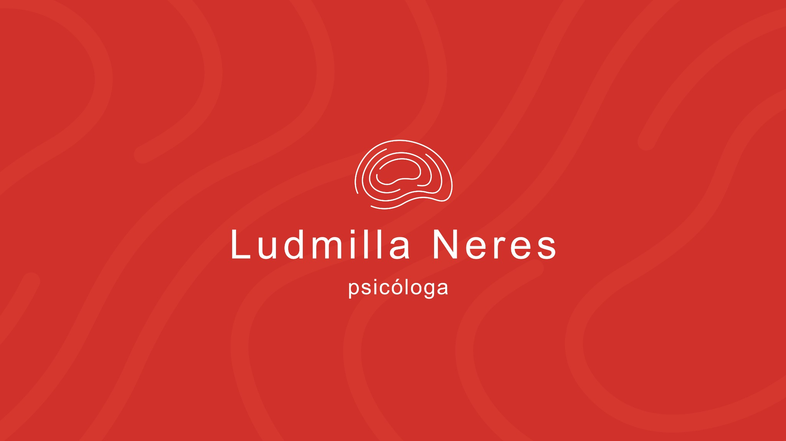
Contexto
A identidade visual desenvolvida para a psicóloga Ludmilla Neres foi criada para representar um atendimento humano, acolhedor e profissional.
O projeto busca fortalecer sua presença de marca por meio de uma comunicação visual delicada, contemporânea e consistente.
Conceito
A identidade parte dos conceitos de acolhimento, escuta, equilíbrio e transformação. Formas orgânicas, uma paleta quente e uma composição leve trabalham juntas para construir uma experiência visual tranquila e confiável.
Criar proximidade e segurança sem abrir mão de profissionalismo.
Construir uma marca sensível, atenta e centrada na experiência humana.
Equilibrar proximidade, credibilidade e serenidade em cada ponto de contato.
Uma linguagem flexível, preparada para acompanhar diferentes momentos da marca.
Direção visual
A direção visual explora tecidos, movimento, gestos e formas orgânicas como referências para uma identidade que transmite fluidez e cuidado sem recorrer a clichês clínicos.
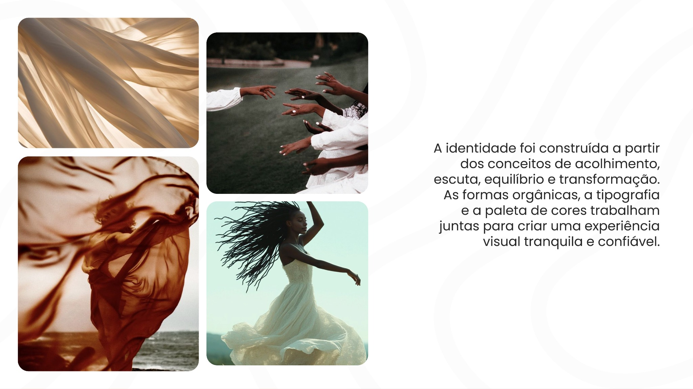
Marca & símbolo
O sistema combina uma assinatura tipográfica leve a um símbolo de traço contínuo, criando uma presença reconhecível que funciona tanto em composições completas quanto em aplicações reduzidas.
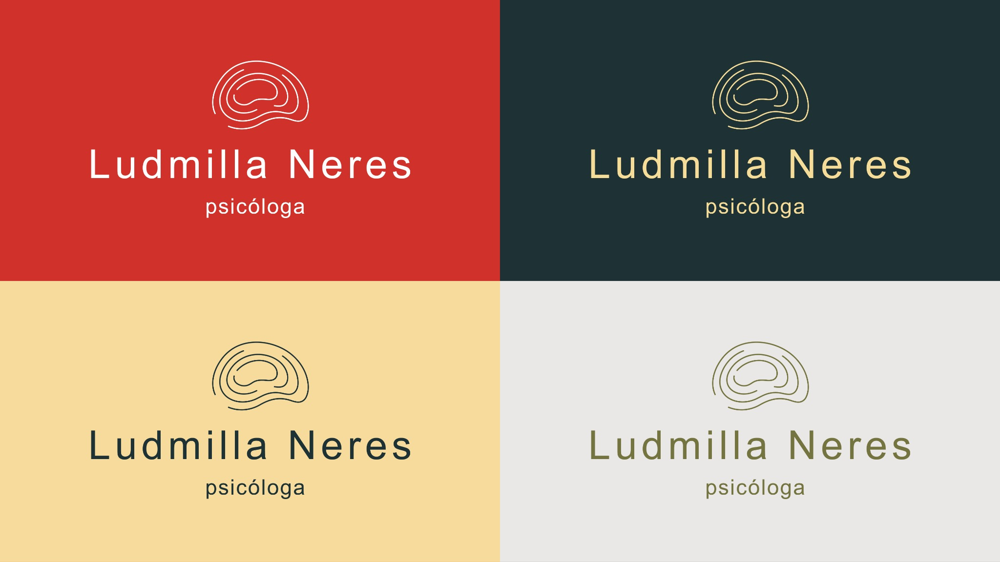
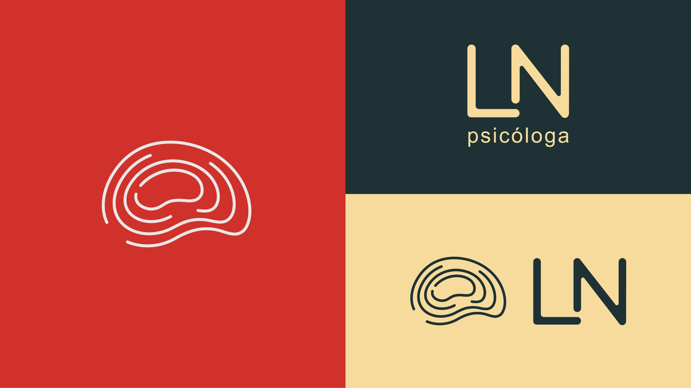
Sistema visual
A combinação de Poppins e Megabyte organiza hierarquia e personalidade, enquanto a paleta equilibra energia, profundidade, estabilidade e luz.
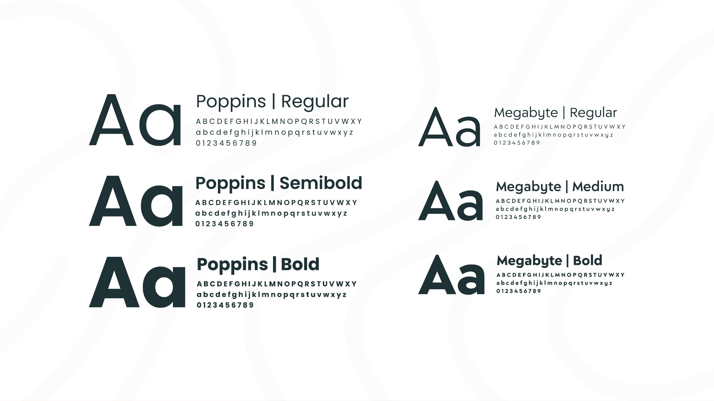
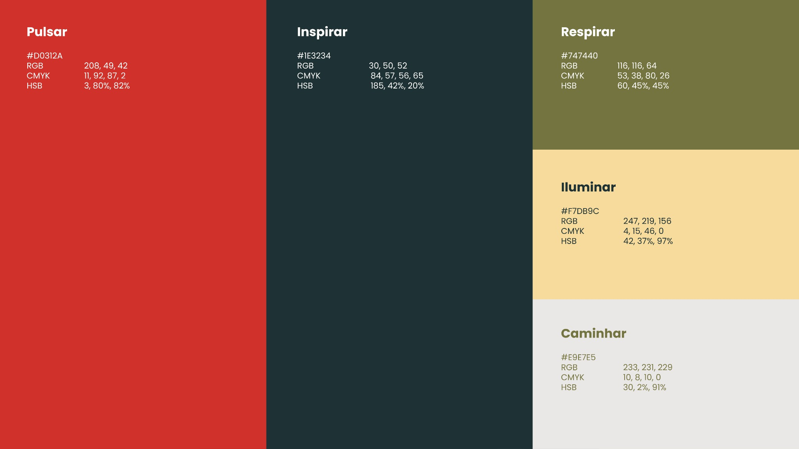
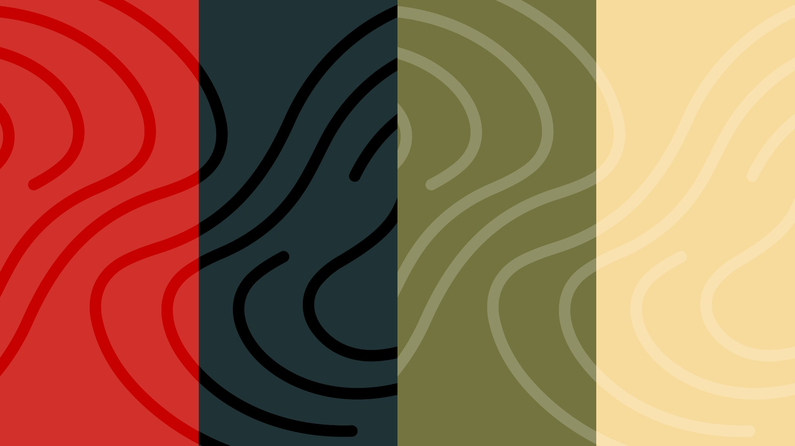
Aplicações
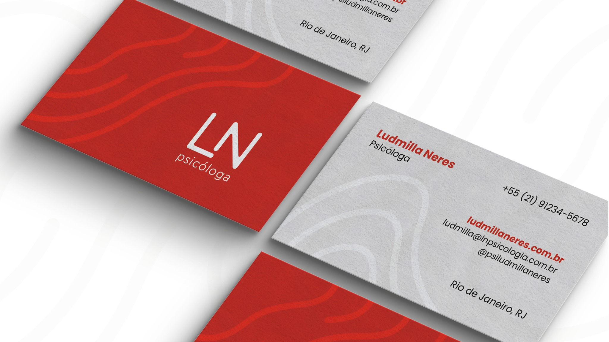
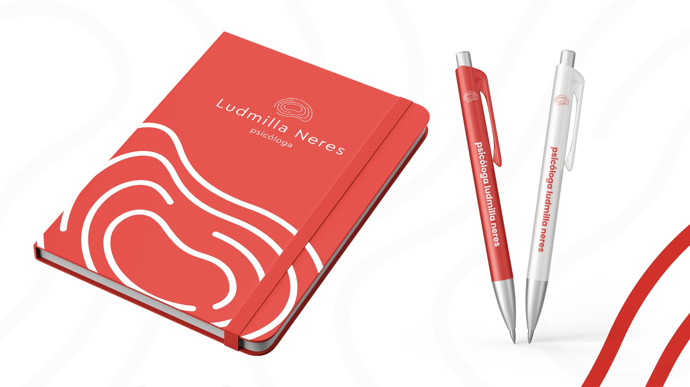
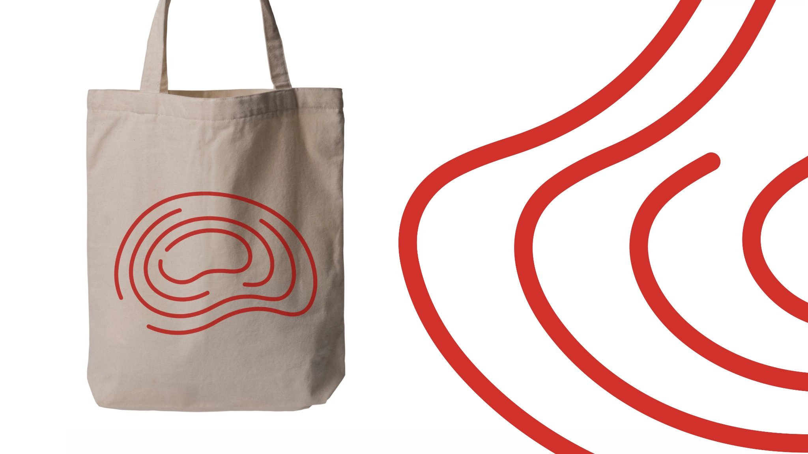
Digital
A identidade também orienta a presença digital, criando uma base visual consistente para conteúdos sobre saúde mental, autocuidado e rotina emocional.
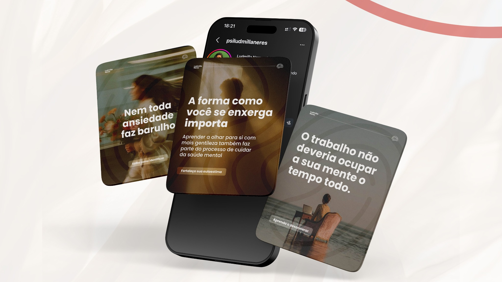
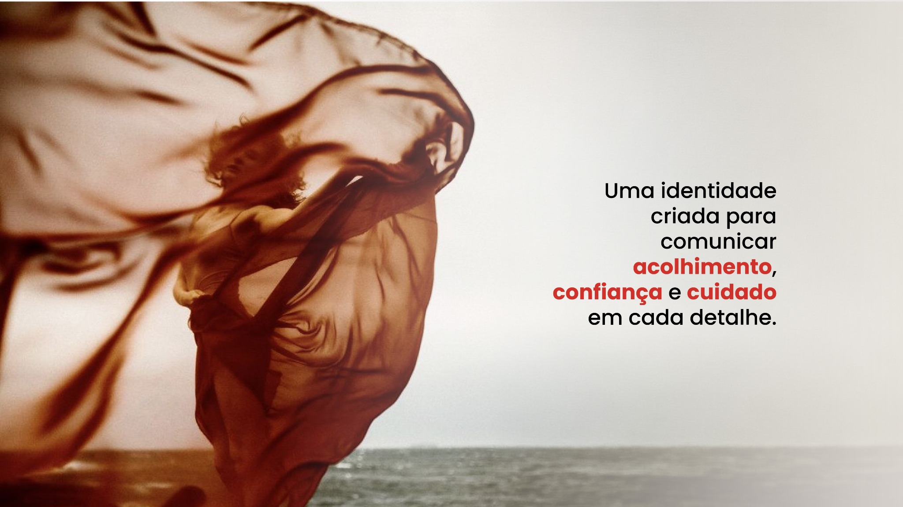
Resultado
O resultado é um sistema visual coerente entre marca, materiais físicos e presença digital, mantendo uma percepção humana e acolhedora sem abrir mão de clareza e profissionalismo.
Contato
Projeto, oportunidade profissional ou uma boa troca sobre design — escolha o canal que fizer mais sentido.